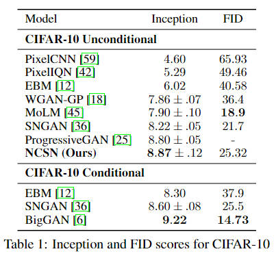

[Skim-read] Generative Modeling by Estimating Gradients of the Data Distribution

Overview
This paper introduce a new generative model where samples are produced via Langevin dynamics using gradients of the data distribution estimated with score matching. And it is important to learn Score-Based generative network and Ito diffusion SDE. In this paper, the training and inference phases are analyzed separately and solutions are proposed for different problems. Different levels of noise are used during training to overcome the problem that gradients can be ill-defined and hard to estimate when the data resides on low-dimensional manifolds. For sampling, we propose an annealed Langevin dynamics where we use gradients corresponding to gradually decreasing noise levels as the sampling process gets closer to the data manifold. The models in this paper produce samples comparable to GANs on MNIST, CelebA and CIFAR-10 datasets, achieving a new state-of-the-art inception score of 8.87 on CIFAR-10.
Score-based Generative Modeling
Defination of Score
Suppose our dataset consists of i.i.d. samples $\{ \mathbf{x}_i \in \mathbb{R}^D \} _ {i=1} ^N$ from an unknown data distribution $p_\text{data}(\mathbf{x})$.
- We define the score of a probability density $p(\mathbf{x})$ to be $\nabla_\mathbf{x}\log p(\mathbf{x})$.
- The score network $\mathbf{s}_\mathbf{\theta}:\mathbb{R}^D \to \mathbb{R}^D$ is a neural network parameterized by $\mathbf{\theta}$, which will be trained to approximate the score of $p_\text{data}(\mathbf{x})$
The goal of generative modeling is to use the dataset to learn a model for generating new samples from $p_\text{data}(\mathbf{x})$. The framework of score-based generative modeling has two ingredients: score matching and Langevin dynamics.
Score Matching for Score Estimation
Score matching (Aapo Hyvärinen, 2005) is originally designed for learning non-normalized statistical models based on i.i.d. samples from an unknown data distribution. Following Song et al. (2019), authors repurpose it for score estimation. Using score matching, authors can directly train a score network $\mathbf{s}_\mathbf{\theta}(\mathbf{x})$ to estimate $\nabla_\mathbf{x}\log p_\text{data}(\mathbf{x})$ without training a model to estimate $p_\text{data}(\mathbf{x})$ first. Different from the typical usage of score matching, authors opt not to use the gradient of an energy-based model as the score network to avoid extra computation due to higher-order gradients.
The objective minimizes $\frac{1}{2}\mathbb{E}_{p_\text{data}(\mathbf{x})}\left[\left \| \mathbf{s}_\mathbf{\theta}(\mathbf{x}) - \nabla_\mathbf{x} \log p_\text{data}(\mathbf{x}) \right \|^2_2 \right]$, which can be shown equivalent to the following up to a constant $$ \frac{1}{2}\mathbb{E}_{p_\text{data}(\mathbf{x})}\left[ \text{tr}(\nabla _\mathbf{x} \mathbf{s}_\mathbf{\theta}(\mathbf{x})) + \frac{1}{2} \left \| \mathbf{s}_\mathbf{\theta}(\mathbf{x}) \right \|^2_2 \right] \tag{1} $$ where $\nabla _\mathbf{x} \mathbf{s}_\mathbf{\theta}(\mathbf{x})$ denotes the Jacobian of $\mathbf{s}_\mathbf{\theta}(\mathbf{x})$. However, score matching is not scalable to deep networks and high dimensional data due to the computation of $\text{tr}(\nabla _\mathbf{x} \mathbf{s}_\mathbf{\theta}(\mathbf{x}))$. Below authors discuss two popular methods for large scale score mathing.
Denoising Score Mathcing
This is the main method used by the authors in the methodology below.
Denoising score mathcing (Pascal Vincent, 2011) is a variant of score matching that completely circumvents $\text{tr}(\nabla _\mathbf{x} \mathbf{s}_\mathbf{\theta}(\mathbf{x}))$. It first perturbs the data point $\mathbf{x}$ with a pre-specified noise distribution $q_\sigma(\tilde{\mathbf{x}} \mid \mathbf{x})$ and then employs score matching to estimate the score of the perturbed data distribution $q_\sigma(\tilde{\mathbf{x}}) \triangleq \int q_\sigma (\tilde{\mathbf{x}} \mid \mathbf{x}) \mathrm{d}\mathbf{x}$. The objective was proved equivalent to the following: $$ \frac{1}{2}\mathbb{E}_{q_\sigma(\tilde{\mathbf{x}} \mid \mathbf{x}) p_\text{data}(\mathbf{x}) } \left [ \| \mathbf{s}_\mathbf{\theta}(\tilde{\mathbf{x}}) - \nabla_{\tilde{\mathbf{x}}} \log q_\sigma (\tilde{\mathbf{x}} \mid \mathbf{x}) \|^2_2 \right ] \tag{2} $$ However, $\mathbf{s}_\mathbf{\theta}^{*} = \nabla_\mathbf{x} \log q_\sigma(\mathbf{x}) \approx \nabla_\mathbf{x} \log p_{\text{data}}(\mathbf{x})$ is true only when the noise is small enough such that $q_\sigma(\mathbf{x}) \approx p_\text{data}(\mathbf{x})$.
Sliced Score Matching
Sliced score matching (Song et al. 2019) uses random projections to approximate $\text{tr}(\nabla _\mathbf{x} \mathbf{s}_\mathbf{\theta}(\mathbf{x}))$ in score matching. The objective is $$ \mathbb{E}_{p_\mathbf{v}}\mathbb{E}_{p_\text{data}} \left [ \mathbf{v}^\top \nabla_\mathbf{x}\mathbf{s}_\mathbf{\theta}(\mathbf{x})\mathbf{v} + \frac{1}{2} \| \mathbf{s}_\mathbf{\theta}(\mathbf{x}) \|^2_2 \right ] \tag{3} $$ where $p_\mathbf{v}$ is a simple ditribution of random vectors, e.g., the multivariate standard normal. The term $\mathbf{v}^\top \nabla_\mathbf{x}\mathbf{s}_\mathbf{\theta}(\mathbf{x})\mathbf{v}$ can be efficiently computed by forward mode auto-differentiation. Unlike denoising score matching which estimates the scores of perturbed data, sliced score matching provides score estimation for the original unperturbed data distribution, but requires around four times more computations due to the forward mode auto-differentiation.
Sampling with Langevin Dynamics
Langevin dynamics can produce samples from a probability density $p(\mathbf{x})$ using only the score function $\nabla_\mathbf{x} \log p(\mathbf{x})$. Given a fixed step size $\epsilon > 0$, and an initial value $\tilde{\mathbf{x}}_0 \sim \pi(\mathbf{x})$ with $\pi$ being a prior distribution (arbitrary), the Langevin method recursively computes the following $$ \tilde{\mathbf{x}}_t = \tilde{\mathbf{x}}_{t-1} + \frac{\epsilon}{2} \nabla_\mathbf{x} \log p(\tilde{\mathbf{x}}_{t-1}) + \sqrt{\epsilon} \mathbf{z}_t \tag{4} $$ where $\mathbf{z}_t \sim \mathcal{N}(\mathbf{0}, \mathbf{I})$. The distribution of $\tilde{\mathbf{x}}_T$ equals $p(\mathbf{x})$ when $\epsilon \to 0$ and $T \to \infin$, in which case $\tilde{x}_T$ becomes an exact sample from $p(\mathbf{x})$ under some regularity conditions. When $\epsilon > 0$ and $T < \infin$, a Metropolis-Hastings update is needed to correct the error of Eq. (4), but it can often be ignored in practice. In this work, authors assume this error is negligible when $\epsilon$ is small and $T$ is large.
The authors give the goals and reasons for network modeling. Sampling from Eq. (4) only requires the score function $\nabla_\mathbf{x} \log p(\mathbf{x})$. Therefore, in order to obtain samples from $p_\text{data}(\mathbf{x})$, authors first train score network such that $\mathbf{s}_\theta(\mathbf{x}) \approx \nabla_\mathbf{x} \log p_\text{data}(\mathbf{x})$ and then approximately obtain samples with Langevin dynamics using $\mathbf{s}_\mathbf{\theta}(\mathbf{x})$. This is the key idea of our framework of score-based generative modeling.
Challenges of Low Data Density Regions
In regions of low data density, score matching may not have enough evidence to estimate score functions accurately, due to the lack of data samples. When sampling with Langevin dynamics, our initial sample is highly likely in low density regions when data reside in a high dimensional space. Therefore, having an inaccurate score-based model will derail Langevin dynamics from the very beginning of the procedure, preventing it from generating high quality samples that are representative of the data.
 Fig. 1. Estimated scores are only accurate in high density regions. (Image source: Yang Song' blog, 2021)
Fig. 1. Estimated scores are only accurate in high density regions. (Image source: Yang Song' blog, 2021)
Authors solution is to perturb data points with noise and train score-based models on the noisy data points instead. When the noise magnitude is sufficiently large, it can populate low data density regions to improve the accuracy of estimated scores. For example, here is what happens when we perturb a mixture of two Gaussians perturbed by additional Gaussian noise.
Yet another question remains: how to choose an appropriate noise scale for the perturbation process? Larger noise can obviously cover more low density regions for better score estimation, but it over-corrupts the data and alters it significantly from the original distribution. Smaller noise, on the other hand, causes less corruption of the original data distribution, but does not cover the low density regions as well as we would like. To achieve the best of both worlds, authors use multiple scales of noise perturbations simultaneously.
Noise Conditional Score Networks
- Perturbing the data using various levels of noise;
- Simultaneously estimating scores corresponding all noise levels by training a single conditional score network.
- After training, when using Langevin dynamics to generate samples, we initially use scores corresponding to large noise, and gradually anneal down the noise level.
- Note that conditional in NCSN is for noise and remains unconditional for the image generation task.
Define Noise Condtional Score Networks
Let $ \{ \sigma_i \} _{i=1}^L $ be a positive geometric sequence that satisfies $\frac{\sigma_1}{\sigma_2} = \cdots = \frac{\sigma_{L-1}}{\sigma_{L}} > 1$.
Let $q_\sigma(\mathbf{x}) \triangleq \int p_\text{data}(\mathbf{t}) \mathcal{N}(\mathbf{x} \mid \mathbf{t}, \sigma^2 \mathbf{I}) \mathrm(d) \mathbf{t}$ denote the perturbed data distribution.
Authors choose the noise levels $\{ \sigma_i \}_{i=1}^L$ such that $\sigma_1$ is large enough to mitigate the difficulties discussed in Eq. (4), and $\sigma_L$ is small enough to minimize the effect on data.
Authors aim to train a conditional score network to jointly estimate the scores of all perturbed data distributions, i.e., $\forall \sigma \in \{ \sigma_i \}_{i=1}^L : \mathbf{s}_\mathbf{\theta}(\mathbf{x}, \sigma) \approx \nabla_\mathbf{x} \log q_\sigma(\mathbf{x})$. Note that $\mathbf{s}_\mathbf{\theta}(\mathbf{x}, \sigma) \in \mathbb{R}^D$ when $\mathbf{x} \in \mathbb{R}^D$. Authors call $\mathbf{s}_\mathbf{\theta}(\mathbf{x}, \sigma)$ a Noise Conditional Score Network (NCSN).
Training NCSNs via score matching
Both sliced and denoising score matching can train NCSNs. Authors adopt denoising score matching as it is slightly faster and naturally fits the task of estimating scores of noise-perturbed data distributions.
Authors choose the noise distribution to be $q_\sigma(\tilde{\mathbf{x}} \mid \mathbf{x}) = \mathcal{N}(\tilde{\mathbf{x}} \mid \mathbf{x}, \sigma^2\mathbf{I})$; therefore $\nabla_{\tilde{\mathbf{x}}} \log q_\sigma (\tilde{\mathbf{x}} \mid \mathbf{x}) = - \frac{\tilde{\mathbf{x}} - \mathbf{x}}{\sigma^2}$. For a given $\sigma$, the denoising score matching objective is $$ \ell(\mathbf{\theta; \sigma}) \triangleq \frac{1}{2} \mathbb{E}_{p_\text{data}(\mathbf{x})} \mathbb{E}_{\tilde{\mathbf{x}} \sim \mathcal{N}(\mathbf{x}, \sigma^2\mathbf{I})} \left [ \left \| \mathbf{s}_\mathbf{\theta}(\tilde{\mathbf{x}}, \sigma) + \frac{\tilde{\mathbf{x}} - \mathbf{x}}{\sigma^2} \right \|^2_2 \right ] \tag{5} $$ Then, author combine Eq. (5) for all $\sigma \in \{ \sigma_i \}_{i=1}^L$ to get one unified objective $$ \mathcal{L}(\mathbf{\theta}; \{ \sigma_i \}_{i=1}^L) \triangleq \frac{1}{L} \sum_{i=1}^L \lambda(\sigma_i) \ell(\mathbf{\theta; \sigma_i}) \tag{6} $$ where $\lambda(\sigma_i) > 0$ is a coefficient function depending on $\sigma_i$. Assuming $\mathbf{s}_\mathbf{\theta}(\mathbf{x}, \sigma)$ has enough capacity, $\mathbf{s}_\mathbf{\theta}^*(\mathbf{x}, \sigma)$ minimizes Eq. (6) iff $\mathbf{s}_\mathbf{\theta}(\mathbf{x}, \sigma_i) = \nabla_\mathbf{x} \log q_{\sigma_i}(\mathbf{x})$ a.s. for all $i \in \{ 1, 2, \cdots, L \}$, because Eq. (6) is a conical combination of $L$ denoising score matching objectives.
- iff: if and only if
- a.s.: almost surely
There can be many possible choices of $\lambda(\cdot)$. Ideally, authors hope that the values of $\lambda(\sigma_i)\ell(\mathbf{\theta};\sigma_i)$ for all $\{ \sigma_i \}_{i=1}^L$ are roughly of the same order of magnitude. Empirically, we observe that when the score networks are trained to optimality, authors approximately have $\| \mathbf{s}_\mathbf{\theta}(\mathbf{x}, \sigma) \|_2 \propto \frac{1}{\sigma}$. This inspires authors to choose $\lambda(\sigma) = \sigma^2$. Because under this choice, there is $\lambda(\sigma)\ell(\mathbf{\theta};\sigma) = \sigma^2 \ell(\mathbf{\theta}; \sigma) = \frac{1}{2} \mathbb{E} [ \| \sigma \mathbf{s}_\mathbf{\theta}(\tilde{\mathbf{x}}, \sigma) + \frac{\tilde{\mathbf{x}} - \mathbf{x}}{\sigma} \|_2^2 ]$. Since $\frac{\tilde{\mathbf{x}} - \mathbf{x}}{\sigma} \sim \mathcal{N}(\mathbf{0}, \mathbf{I})$ and $\| \sigma \mathbf{s}_\mathbf{\theta}(\mathbf{x}, \sigma) \|_2 \propto 1$, authors conclude that the order of magnitude of $\lambda(\sigma)\ell(\mathbf{\theta};\sigma)$ does not depend on $\sigma$.
What specific benefit this has it not stated by the authors in the original article, but I think it should be to standardize the magnitude for different levels of noise, so that a single loss function (Eq. (5)) after perturbation of the data by different levels of noise will have the same weight in the overall loss function (Eq. (6)), i.e., the supervisory weights for matching scores to the data after perturbation of all levels of noise at training time are equal.
NCSN inference via annealed Langevin dynamics
After the NCSN $\mathbf{s}_\mathbf{\theta}(\mathbf{x}, \sigma)$ is trained, authors proposed a sampling approach—annealed Langevin dynamics (Fig. 3).
(Algorithm source: Song & Ermon, 2019 as a screenshot)
This algorithm is inspired by simulated annealing and annealed importance sampling. This algorithm start annealed Langevin dynamics by initializing the samples from some fixed prior distribution, e.g., uniform noise. Then run Langevin dynamics to sample from $q_{\sigma_1}(\mathbf{x})$ with step size $\alpha_1$. Next run Langevin dynamics to sample $q_{\sigma_2}(\mathbf{x})$, starting from the final samples of the previous simulation and using a reduced step size $\alpha_2$. Authors continue in this fashion, using the final samples of Langevin dynamics for $q_{\sigma_{i-1}}(\mathbf{x})$ as the initial samples of Lnagevin dynamic for $q_{\sigma_i}(\mathbf{x})$, and tuning down the step size $\alpha_i$ gradually with $\alpha_i = \epsilon \cdot \sigma_i^2 / \sigma_L^2$. Finnaly, run Langevin dynamics to sample from $q_{\sigma_L}(\mathbf{x})$, which is close to $p_\text{data}(\mathbf{x})$ when $\sigma_L \approx 0$.
Result and Conclusion
The authors conducted quantitative tests with excellent results, but of more interest in this article is the theoretical foundation of the Score-Based Generative Model, and much of the knowledge and assumptions in this article were utilized in Yang Songs subsequent diffusion work.
As an unconditional model, we achieve the state-of-the-art inception score of 8.87, which is even better than most reported values for class-conditional generative models.
(Table source: Song & Ermon, 2019 as a screenshot) 
References
[1] Yang Song & Stefano Ermon. “Generative Modeling by Estimating Gradients of the Data Distribution.” NeurIPS 2019.
[2] Aapo Hyvärinen. “Estimation of Non-Normalized Statistical Models by Score Matching.” JMLR 2005.
[3] Yang Song et al. “Sliced Score Matching: A Scalable Approach to Density and Score Estimation.” Uncertainty in Artificial Intelligence 2019.
[4] Pascal Vincent. “A Connection Between Score Matching and Denoising Autoencoders.” Neural Computation 2011.